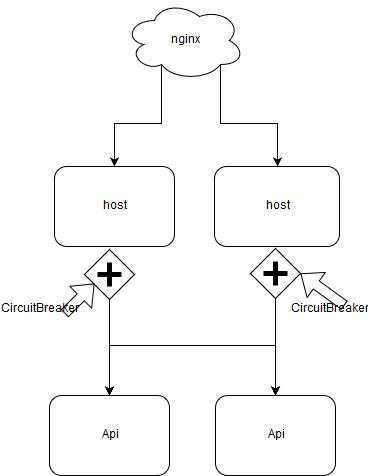
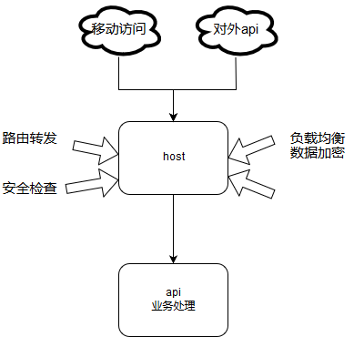
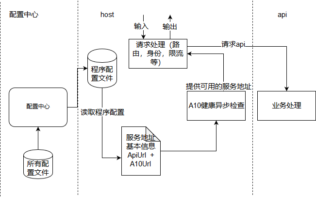
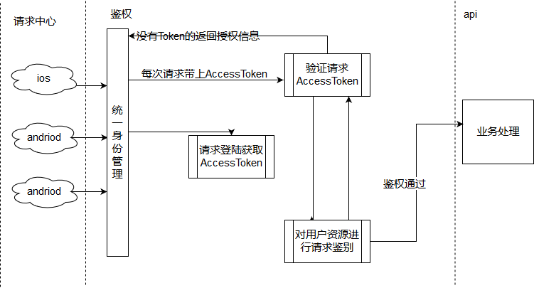

原文连接:https://www.cnblogs.com/shelldudu/p/11115761.html
never下app的host与api
Never是纯c#语言开发的一个框架。host则是使用该框架开发出来的API网关，它包括了：路由、认证、鉴权、熔断，内置了负载均衡器Deployment；并且只需要简单的配置即可完成。
设计的核心思路：host负责转发 + 身份识别 + 熔断，api提供业务处理（类似一个编排）
1、基本使用
用一台机器来运行host，配置文件配置程序端口，api地址，限流次数信息等。
（1）程序host启动的时候去配置中心读取文件，读取成功后IConfiguration接口就可以读取相关配置；
（2）程序host会监听客户端请求，对header、body等进行包装，并且会进行身份认识，将请求下发到api服务器进行处理，再将请求结果返回；
（3）程序host设置一个健康检查，api配置的地址如果不可用，则返回不可处理结果。由于读取api的配置信息是从配置中心的，所以配置中心也可以使用熔断设计。

2、集成identity service
当我们说到的identity，就是你有没有访问这个api的资源，这里可以分2种：第一种是有没有权限访问这个系统（要求登陆），第二种是登陆了有没有权限访问系统里面某一个资源。对于第一种，我们可以采用AOP的统一处理方式；比如只要验证token就可以，第二种则是获取 到用户标识了，用户会在我们后台分配一定的权限资源，权限资源 + 身份标识 + 请求信息结合验证就可以了。
为了业务划分清楚，我们将host与api的分工要特别说明
- host，这个可以对我们的请求做路由转发，健康检查，身份验证，数据加密，负载均衡。
- api，我们的业务所在地。有些情况是前端请求从host转发到api里面的时候会带上身份，在api里面我们可以通过Mvc一些Aop做法得到用户信息，比IAuthorizationFilter接口，Never.Web.WebApi.Security.UserPrincipalAttribute特性等
3、服务发现
我们统一使用配置中心去获取服务，配置中心在更新配置的时候会异步下发当前配置请求，host程序的健康检查会发现对服务不可用的时候做熔断处理，这个配置中心里面的服务配置可以从db管理（可以扩展为服务主动注册），可以手动编写。
配置host
下载demo，github地址：https://github.com/shelldudu/never_application
在host项目中，我们多加个配置文件appsettings.app.json，还有一个是系统的appsettings.json配置文件，为什么会配置2个文件？appsettings.json文件是配置程序启动的端口 + 配置中心的访问地址，通常是比较固定的；而appsettings.app.json则是其实动态获取的配置，比如分api的地址，限流的信息，这些都是通过配置中心管理，而配置中心可以通过后台管理。
//统一使用配置中心，方便管理
e.Startup.UseConfigClient(new IPEndPoint(IPAddress.Parse(configReader["config_host"]), configReader.IntInAppConfig("config_port")), out var configFileClient);
//启动配置中心，每10秒的心跳，并且指定当前读取配置中心下面的app_host文件内容。
configFileClient.Startup(TimeSpan.FromMinutes(10), new[] { new ConfigFileClientRequest { FileName = "app_host" } }, (c, t) =>
{
var content = t;
if (c != null && c.FileName == "app_host")
{
System.IO.File.WriteAllText(System.IO.Path.Combine(this.Environment.ContentRootPath, "appsettings.app.json"), content);
}
}).Push("app_host").GetAwaiter().GetResult();netcore系统新加appsettings.app.json监听文件则是通过下面的代码实现
//程序名字
var pathToExe = System.Diagnostics.Process.GetCurrentProcess().MainModule.FileName;
//程序所在位置
var pathToContentRoot = Path.GetDirectoryName(pathToExe);
return WebHost.CreateDefaultBuilder(args)
//监听2个文件
.UseJsonFileConfig(Never.Web.WebApi.StartupExtension.ConfigFileBuilder(new[] { "appsettings.json", "appsettings.app.json" }))
//使用kestrel
.UseKestrel((builder, option) =>
{
//主要是重写监听url
var ports = string.Empty;option.Listen(System.Net.IPAddress.Any, ports);}) .UseContentRoot(pathToContentRoot) .UseStartup<Startup>()UseJsonFileConfig这个扩展是在IConfigurationBuilder里面使用AddConfiguration方法加配置文件的读取与监听，这个AddConfiguration方法是系统提供的。
//config builder
builder.ConfigureAppConfiguration((h, g) =>
{
var files = jsonConfigFiles?.Invoke(h);
if (files.IsNotNullOrEmpty())
{
foreach (var file in files)
{
if (file.Exists)
g.AddConfiguration(new ConfigurationBuilder().SetBasePath(h.HostingEnvironment.ContentRootPath).AddJsonFile(file.FullName, true, true).Build());
else
throw new System.IO.FileNotFoundException(string.Format("找不到文件{0}", file.FullName));
}
}
});host发现服务
由于有配置中心的存在，我们可以读取api里面的服务地址（也可以扩展为服务主动注册），但是我们并不知道该地址是否为可用的，于是我们就有必要做一个对地址的循环检查。我们约定请求服务地址里面的A10Url项，去请求这个A10Url的地址内容，如果返回是work内容的表明可使用，其他表示不可用。这个work内容可以由自己内容约定（可在ProxyRouteDispatcher构造函数里面传递），只是never下的deplyment约定请求的是a10路由是否可用。

图中A10的健康异步检查，开户一个Timer或Thread定时去拿到服务地址信息元素A10Url的内容，只有返回了work表明该元素的ApiUrl是可用的。
//读取服务地址，构造函数可以传递如何匹配A10Url内容的回调
private class ProxyRouteDispatcher : DefaultApiRouteProvider
{
private readonly IConfigReader configReader = null;
public ProxyRouteDispatcher(IConfigReader configReader)
{
this.configReader = configReader;
}
public override IEnumerable<ApiUrlA10Element> ApiUrlA10Elements
{
get
{
/*读取AppA10:url:0，AppA10:url:.1这个配置信息，如下面的配置
* {
"application": "true",
"version": "1123",
"AppA10": {
"url": [ "http://127.0.0.1:8081/", "http://127.0.0.1:8081/" ],
"ping": [ "http://127.0.0.1:8081/a10", "http://127.0.0.1:8081/a10" ]
}
}
*/
}
}
}健康检查
/// <summary>
/// 路由中间件
/// </summary>
private class ProxyMiddlewear : IMiddleware
{
private readonly AuthenticationService authenticationService = null;
private readonly IApiUriDispatcher proxyRouteDispatcher = null;
public ProxyMiddlewear(AuthenticationService authenticationService, IConfigReader configReader)
{
this.authenticationService = authenticationService;
var provider = new ProxyRouteDispatcher(configReader);
//开户一个健康检查，表示60秒会检查一遍，检查地址为ProxyRouteDispatcher.ApiUrlA10Elements里面的A10Url
var a10 = Never.Deployment.StartupExtension.StartReport().Startup(60, new[] { provider });
this.proxyRouteDispatcher = new ApiUriDispatcher<IApiRouteProvider>(provider, a10);
}
}host转发路由
转发路由，要包含请求的querystring，header，以及body这三者信息。首先我们通过发现服务里面的ProxyRouteDispatcher对象我们可知道当前待转发的ApiUrl，存在2个以上ApiUrl我们就要使用策略去选择我们应该用哪一条，系统默认取条数[条数%请求Ascill码]
//拿api地址，如果存在多条可用的api地址的话，则找出其中一条，这里还要结合限流等策略
var host = new HostString(this.proxyRouteDispatcher.GetCurrentUrlHost((context.Request.ContentLength.HasValue ? context.Request.ContentLength.Value : segments[1].GetHashCode()).ToString()));
var url = UriHelper.BuildAbsolute("http", host, context.Request.PathBase, context.Request.Path, context.Request.QueryString, default(FragmentString));1、querystring 上面可以知道我们通过”var url =“代码知道整个url的完整地址
2、header 我们可以将HttpContext.Request对象里面的Headers都加入到我们的请求中，当然，有些Header的key不一定全部都要，因此我们只选择了几个有用的放到了header
//客户端地址
if (context.Connection.RemoteIpAddress != null)
{
headers["ip"] = context.Connection.RemoteIpAddress.ToString();
}
if (context.Request.Headers != null)
{
//通过X-Real-IP，X-Forwarded-For等nginx传递过来的客户端ip地址
headers["ip"] = context.GetContextIP();
}
//查询身份认证，accesstoken不要传递到api，api根本不知道这个accesstoken是用来做什么的
var user = this.authenticationService.GetUser(context, token);
if (user.HasValue && user.Value > 0)
{
headers["userid"] = user.Value.ToString();
}
//查找platform关键信息
if (context.Request.Headers != null && context.Request.Headers.Keys.Any(ta=>ta.IsEquals("platform")))
{
var value = context.Request.Headers["platform"];
headers["platform"] = value.ToString();
}3、body 由于我们在这里对数据加了密，所以我们要对body进行解密处理，如果没有加密的，直接使用Context.Request.Body对象就可以了。下面的模拟post请求
//开始请求
using (var body = this.ConvertContentFromBodyByteArray(context, enctryptor))
{
using (var method = new Never.Utils.MethodTickCount(""))
{
var task = new HttpRequestDownloader().PostString(new Uri(url), body, header, "application/json");
var content = task;// task.GetAwaiter().GetResult();
return this.ConvertContentToBody(context, content, enctryptor);
}
}body数据的加解密
//请求的body读取后进行3des解密
private Stream ConvertContentFromBodyByteArray(HttpContext context, IContentEncryptor enctryptor)
{
using (var st = new MemoryStream())
{
context.Request.Body.CopyTo(st);
st.Position = 0;
var @byte = st.ToArray();
return enctryptor.Decrypt(@byte, new[] { "utf-8" });
}
}
//请求回来的内容将进行3desc加密
private Task ConvertContentToBody(HttpContext context, byte[] content, IContentEncryptor enctryptor)
{
var @byte = enctryptor.Encrypt(content);
return context.Response.Body.WriteAsync(@byte, 0, @byte.Length);
}
//请求回来的内容将进行3desc加密
private Task ConvertContentToBody(HttpContext context, string content, IContentEncryptor enctryptor)
{
var @string = enctryptor.Encrypt(content);
return context.Response.WriteAsync(@string);
}有同学会问如果是get,delete等请求呢，这又怎么做？实际也很好做，我们用httpclient来当例子，喜欢的同学可以研究一下


/// <summary>
/// 使用HTTPClient处理请求
/// </summary>
public Task ReverseInvokeAsync(HttpContext context, RequestDelegate next, ProxyRouteDispatcher dispatcher, Uri uri)
{
var requestMessage = new System.Net.Http.HttpRequestMessage()
{
RequestUri = uri,
Method = new System.Net.Http.HttpMethod(context.Request.Method),
};
//没有body内容的请求
var requestMethod = context.Request.Method;
if (!(HttpMethods.IsGet(requestMethod) || HttpMethods.IsHead(requestMethod) || HttpMethods.IsDelete(requestMethod) || HttpMethods.IsTrace(requestMethod)))
{
var content = new System.Net.Http.StreamContent(context.Request.Body);
requestMessage.Content = content;
}
//加入所有的header
if (requestMessage.Content != null && requestMessage.Content.Headers != null)
{
foreach (var header in context.Request.Headers)
{
requestMessage.Content.Headers.TryAddWithoutValidation(header.Key, header.Value.ToArray());
}
}
//开始请求
using (var httpClient = new System.Net.Http.HttpClient(new System.Net.Http.HttpClientHandler() { AutomaticDecompression = System.Net.DecompressionMethods.GZip }) { })
using (var responseMessage = httpClient.SendAsync(requestMessage, System.Net.Http.HttpCompletionOption.ResponseHeadersRead, context.RequestAborted).GetAwaiter().GetResult())
{
context.Response.StatusCode = (int)responseMessage.StatusCode;
foreach (var header in responseMessage.Headers)
context.Response.Headers[header.Key] = header.Value.ToArray();
foreach (var header in responseMessage.Content.Headers)
context.Response.Headers[header.Key] = header.Value.ToArray();
//表示输出的内容长度不能确定
context.Response.Headers.Remove("transfer-encoding");
//copy到body里面去了
responseMessage.Content.CopyToAsync(context.Response.Body);
}
return Task.CompletedTask;
}host的身份认证
在使用netcore做demo。先回顾我们上面说到的“集成identity service”，同时我们要自问一下什么身份认证？是跟鉴权一样的功能？基本上扯上鉴权，又要说到权限，而权限的理解，做CRM的同学会比较清楚。而传统鉴权基本流程就是如下

上面是传的鉴权流程；
（1）对于AccessToken的使用还是比较简单的，只要验证这个AccessToken是否合法便行，合法的条件如下：该AccessToken是本程序生成的，不能使用别的程序生成，AccessToken可以在本程序内找到，比如使用memcached技术实现，当前我们的程序还加了特比的条件：AccessToken可以加解密。如下面的代码
/// <summary>
/// 获取从header中Token
/// </summary>
/// <param name="context"></param>
/// <returns></returns>
public Token GetToken(HttpContext context)
{
//查询accesstoken
var token = context.Request.Headers.ContainsKey("accesstoken") ? context.Request.Headers["accesstoken"].FirstOrDefault() : string.Empty;
//空的话返回默认的token
if (string.IsNullOrEmpty(token))
{
return new Token() { CryptToken = "56dc54a07f3d15a400000155" };
}
//尝试对accesstoken使用加解密
try
{
var splits = token.From3DES("56dc54a07f3d15a400000155").Split('|');
if (splits != null && splits.Length == 2)
{
return new Token()
{
AccessToken = token,
CryptToken = splits[0],
UserToken = splits[1]
};
}
}
catch
{
//异常的话返回默认的token
return new Token() { CryptToken = "56dc54a07f3d15a400000155" };
}
//空的话返回默认的token
return new Token() { CryptToken = "56dc54a07f3d15a400000155" };
}（2）这个AccessToken是怎么生成的？这必然要求用户先登陆了才可以生成。用户登陆，是不是意味着要输入账号与密码信息，要求后端提供的这个login接口服务，如果这个host是承载多个业务api的，不同的业务api有不同的host，AccessToken怎么根据业务api生成不同的标识，系统A的AccessToken是否可用在系统B？这样是否会出现串号？
引发这样的一系列问题，我们首先确定这个host是否承载多个业务api？如果是承载多种业务api，那么必然要求所有的生成AccessToken是符合当前host程序的要求的：
- 多种业务api不可能说我要根据你当前使用的技术去生成AccessToken吧，这样你后面一改这种host技术那我们的业务api岂不是全部都要改，造成天下大乱了；因此如果业务api生成Token的就要求host要使用业务api的一些标准：不能修改Token。假如我想实现对数据加解密，这是否意味着加解密的算法只能放在业务api那里了？不可能说我整个服务提供了AccessToken又提供了SecurityToken给到客户端吧，要解决这个方面，我们设定有2种方案：放在host那里，则host要求业务api在生成这个AccessToken的时候加上加解密的信息；放在api那里生成，如果host处理报文，这样好明显与单一设计原则违背，整个加解密应该是个统一方案，不可能说业务api提供一半实现而host又要提供一半实现；如果api处理报文，报文的复杂度，加密的服务等整个业务api做成了功能太大太多的膨胀方式，即便这种问题是可以通过aop+中间件去处理，至少业务api做加解密的时候开发调试找bug难度加大，报文服务配置文件也会到处都存在，同时还有鉴权的问题去解决呢。这样有没有人想过为什么要分host与api2个项目？
- 当前host程序如果提供了login服务，那么后面每加一种服务，这个host就要重新更新，最后会造成类似单点故障的问题了，并且host不能涉及具体业务的代码处理。所以明确了这个host只能为某种业务api提供服务，不能承接多种业务api服务
- 程序host不提供login服务接口，而业务api又不能生成AccessToken，那么可以分解为：api提供login服务，host提供生成AccessToken，那么就要解决host什么时候生成AccessToken了，所以host与api应该有一定的契约约定
当业务api提供了login服务接口后，我们的host转发的时候要知道这个路由等下是要生成AccessToken的，这样当login服务接口返回了正确的验证信息后，host就生成AccessToken了
//host与api约定处理方案生成的AccessToken
using (var body = this.ConvertContentFromBodyByteArray(context, enctryptor))
{
//注册与登陆，由于在这里做identity servie
switch (segments[2])
{
//注册
case "Register":
//登陆
case "Login":
{
var loginTask = new HttpRequestDownloader().PostString(new Uri(url), body, header, "application/json", 0);
var loginContent = loginTask;
var target = EasyJsonSerializer.Deserialize<Never.Web.WebApi.Controllers.BasicController.ResponseResult<UserIdToken>>(loginContent);
//验证成功，此时要生成AccessToken信息
if (target != null && target.Code == "0000" && target.Data.UserId > 0)
{
var token2 = this.authenticationService.SignIn(context, target.Data.UserId).GetAwaiter().GetResult();
var appresult = new Never.Web.WebApi.Controllers.BasicController.ResponseResult<AppToken>(target.Code, new AppToken { @accesstoken = token2.AccessToken }, target.Message);
return this.ConvertContentToBody(context, EasyJsonSerializer.Serialize(appresult), enctryptor);
}
//验证不成功，返回验证信息
var appresult2 = new Never.Web.WebApi.Controllers.BasicController.ResponseResult<AppToken>(target.Code, new AppToken { @accesstoken = string.Empty }, target.Message);
return this.ConvertContentToBody(context, EasyJsonSerializer.Serialize(appresult2), enctryptor);
}
}
}AccessToken是用户身份标识，这里都已经可以拿到了用户了，想要实现传统的鉴权，应该不难了吧。
上面用的路由方式去表述了host与api之间的约定，还有很多方案的，举个栗子：api在登陆与注册的处理中在header返回个标识，或者返回个特定的status。
host的限流
从上面我们可以拿到了apiurl元素，每个apiurl正在处理的请求有多少都是可以统计出来的，只要这个统计数达到限流后便可以达到限流作用。当然限流目前会有2种处理方式：等待，放弃。
1、放弃 通常我们不要先选择放弃，我们可以尝试使用其他的api，因为上面说到"首先我们通过发现服务里面的ProxyRouteDispatcher对象我们可知道当前待转发的ApiUrl，存在2个以上的我们就要使用策略去选择我们应该用哪一条"，所以应该尽可能遍历所有可用的ApiUrl，实在找不到可用的再放弃，response直接返回，比如返回503。
2、等待，可以使用让重试，线程睡眠，自旋等技术，感兴趣的去看看文章：熔断，限流，降级
程序中没有做限流技术，目前最快也只是加载放弃，重试几次手段。
关于集群
大家可以发现这里的没有集群信息的，由于host对api有健康检查，集群不会放到api；配置中心又会做心跳与重连接，host有可能挂，因此集群应该是放到host + 配置中心。我们后面可以尝试实现一些，期待后面的更新吧！